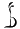
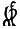

The other day, I was playing cards backstage at a production of “Seussical” with three fellow cast and crew members (actress siblings Ri and Ani Ng, and the stage manager, nicknamed “Her”). Bored with the usual games, I offered to teach them how to play Tichu. I partnered with Ani, while Ri and Her formed the other team.
They picked up the game quickly, but given that they were beginners, they didn’t play very expertly. In particular, they declared “Tichu” far too often (both types). At least they realized that having both players in a partnership declare is counterproductive, so they never did that.
I kept score. Inspired by the show (and the oversized deck), I opted to use an unusual notation. Here’s what the score sheet looked like after we had played for a while.
| Me+A | H+R | |||||||
|---|---|---|---|---|---|---|---|---|
| 4 | – | 1 | 4 | |||||
| – | 3 | 5 |  | |||||
| – | 3 | 1 | ||||||
| – | 1 |  | – | 3 | ||||
| 3 | – | 3 | ||||||
At this point, the other players remarked that they didn’t like the “negative energy” generated by the fact that a majority of the scores were negative. (Theatre people can be so superstitious.) To resolve the issue, I proposed a change to the scoring system: whenever a team was supposed to lose points from a failed declaration, we would simply add that number of points to the other team’s score instead. This made the majority of scores positive, and so we were able to continue playing. Or we would have been able to, if we hadn’t had to get back to work on the show. But it certainly was an interesting game until then.